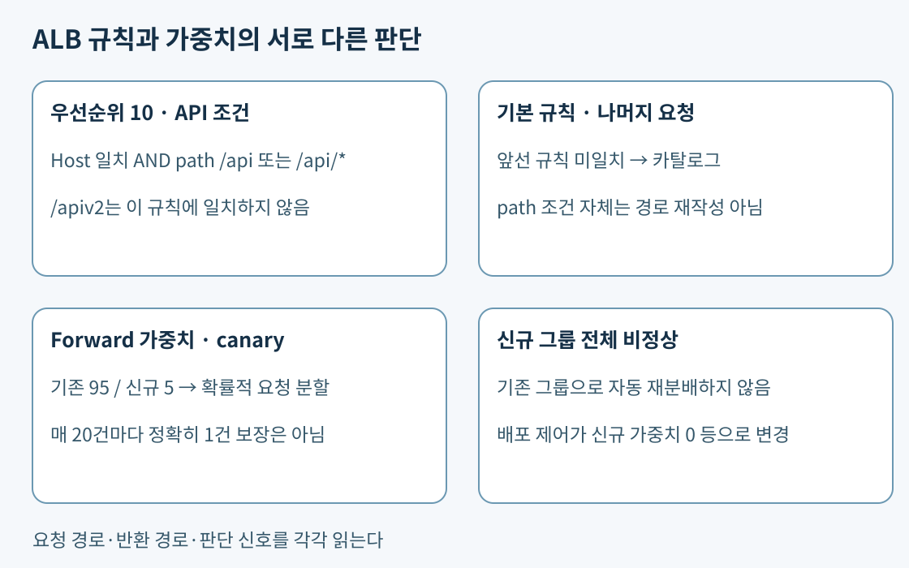
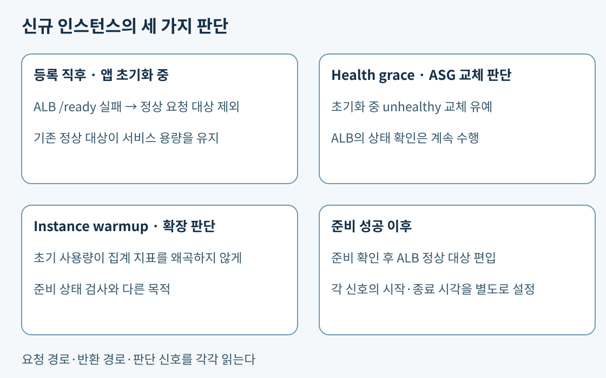

6일 차 본문 · 4일 차 외부 경로 · 5일 차 네트워크 통제
핵심. HTTP 요청에는 호스트 이름(Host)과 자원 경로(path)가 있다. https://shop.example.com/api/items?id=7에서 호스트는 shop.example.com, 경로는 /api/items, 질의 문자열은 id=7이다. ALB 리스너는 HTTPS 443처럼 받아들일 프로토콜·포트를 정한다. 리스너 규칙은 조건과 동작을 묶으며 작은 우선순위 번호부터 검사한다. 마지막 기본 규칙은 앞선 규칙에 맞지 않은 요청을 처리한다. 주소 범위가 가장 구체적인 VPC 경로 선택과 다른 방식이다. 리스너 규칙 순서.
구성 예 A. 같은 호스트의 /api와 /api/ 아래만 API 서버, /apiv2와 나머지는 카탈로그 서버로 보낸다고 하자. 우선순위 10 규칙에 Host shop.example.com과 path 값 /api, /api/*를 넣어 API 대상 그룹으로 forward한다. 하나의 path 조건 안의 여러 값은 그중 하나에 맞으면 된다. 같은 규칙에 Host와 path를 함께 두면 두 종류 조건을 모두 만족해야 한다. /api는 정확한 일치, /api/*는 슬래시 뒤의 0개 이상 문자를 허용하는 와일드카드 패턴이다. /api*라고 쓰면 /apiv2도 들어오므로 요구와 다르다. 기본 규칙은 카탈로그로 보낸다. path 조건은 경로를 검사할 뿐 그 자체로 경로를 지우거나 새 경로로 바꾸지 않는다. 경로 매칭은 대소문자를 구분한다. Host·path 조건과 와일드카드.

보충 구성 예. Canary 배포는 작은 비율의 실제 요청을 새 버전에 보내 오류·지연을 관찰한 뒤 비율을 늘리는 방식이다. ALB forward 동작에 기존 대상 그룹 95, 새 대상 그룹 5의 가중치를 두면 새 요청을 확률적으로 분할할 수 있다. 요청마다 정확히 20개 중 1개가 된다는 보장은 아니다. 세션 고정이 있으면 관측 비율도 달라질 수 있다.
새 그룹이 비거나 전체 unhealthy라고 ALB가 그 그룹의 가중치를 자동으로 다른 그룹에 넘기지 않는다. 배포 제어가 상태·업무 오류를 관찰하고 새 그룹의 가중치를 0으로 바꾸거나 이전 규칙으로 되돌리는 절차가 필요하다. 단순 200 응답만 보지 않고 결제 오류율 같은 업무 신호도 관찰한다. 가중치를 설정하는 기능과 신호를 보고 변경하는 자동화는 다른 구성 요소다. Forward 가중치와 자동 failover 제한.
핵심. L4는 TCP·UDP 전송 계층, L7은 HTTP 같은 애플리케이션 계층이다. NLB는 UDP 게임 트래픽과 AZ별 고정 주소 요구에 적합하지만 HTTP path로 서비스를 나누려면 ALB 기능을 비교한다. NLB의 UDP 대상에도 상태 확인은 UDP 패킷으로 하지 않고 TCP·HTTP·HTTPS 중 지원 방식을 사용한다. UDP 포트를 열었다는 사실과 업무를 처리할 준비가 됐다는 사실을 구분해야 한다. NLB 프로토콜, NLB 대상 상태 확인.
구성 예 B. 게임은 UDP 9100, 상태 API는 HTTP 8080을 사용한다. /live는 프로세스 생존만, /ready는 게임 데이터·매치 처리 준비까지 확인한다고 하자. TCP 8080 접속 성공은 프로세스가 소켓을 열었다는 뜻일 뿐 게임 준비를 증명하지 않는다. HTTP 8080 /ready가 성공 코드를 반환할 때 정상 대상으로 등록하게 해야 한다. 상태 포트의 보안 규칙도 필요하다. 준비 전 몇 분 동안 실패하는 새 대상을 제외하더라도 다른 AZ에 정상 용량이 남아 있어야 요청을 계속 받을 수 있다.
모든 대상이 모든 활성 AZ에서 비정상인 경우 NLB는 fail-open으로 비정상 대상에도 보낼 수 있다. ALB에도 전체 대상 비정상 때의 fail-open이 있다. 따라서 상태 확인은 “어떤 상황에서도 준비 안 된 대상에는 단 한 요청도 안 간다”는 절대 보장이 아니다. 전체 장애 알림·오류 응답·복구 경로를 함께 설계한다. NLB 전체 비정상 동작, ALB 전체 비정상 동작.
GWLB는 방화벽 같은 가상 장비에 패킷을 분산한다. 캡슐화는 원래 패킷을 다른 헤더로 감싸 운반하는 방식이며 GWLB는 장비와 GENEVE·UDP 6081을 사용한다. GWLB Endpoint와 라우팅을 이용해 검사 경로를 만들고 장비가 GENEVE를 처리해야 한다. 사용자 HTTP 경로 분기, UDP 게임 서비스 분산, 검사 장비 확장은 각각 ALB·NLB·GWLB의 다른 선택 이유다. GWLB의 장비 통합.
핵심. ASG(Auto Scaling Group)는 목표 용량을 유지하는 EC2 그룹이다. 로드 밸런서의 대상 상태 확인은 요청을 보낼지를 결정한다. ASG의 상태 확인은 인스턴스를 교체할지를 결정한다. ASG에서 ELB 상태 확인을 사용하지 않으면 ALB가 앱 프로세스 장애를 알아도 ASG가 EC2 검사만 보고 기존 서버를 유지할 수 있다.
Health check grace period는 새 인스턴스가 InService에 들어간 뒤 초기화 때문에 unhealthy라고 교체되는 것을 일정 시간 유예한다. ASG의 유예 중에도 ALB 상태 확인은 계속된다. 따라서 유예를 5분으로 두었다고 ALB가 5분간 무조건 트래픽을 보내는 것은 아니다. 너무 길게 두면 실제 앱 장애 교체도 늦어진다. EC2가 실행 상태를 벗어나는 경우까지 모든 교체를 막는 보호 장치로 이해하지 않는다. ASG 상태 확인 연동, 유예 기간의 범위.
Instance warmup은 신규 인스턴스의 초기 사용량이 동적 확장 정책의 집계 지표를 왜곡하지 않도록 하는 시간이다. 앱이 캐시를 채우며 CPU가 높거나 아직 사용자 요청을 안 받는 상태를 정상 처리 용량으로 성급히 계산하지 않게 한다. 준비 안 된 대상으로 트래픽을 막는 역할은 target health, 성급한 unhealthy 교체 방지는 grace, 확장 지표 안정화는 warmup이다. 이 세 설정을 같은 타이머라고 보지 않는다. 기본 instance warmup.

핵심. Target tracking은 서버당 부하 지표를 목표 수준으로 유지하도록 ASG 용량을 조절한다. 동일 서버를 추가하면 서버당 부하가 감소해야 지표가 제어에 적합하다. 요청이 CPU를 쓰는 서비스는 평균 CPU가 후보지만 네트워크·I/O 대기로 CPU가 낮은 웹 API는 ALB 대상당 요청 수가 더 적합할 수 있다. I/O 대기는 디스크·네트워크 응답 등을 기다리는 시간이다. DB가 이미 병목인데 앱만 추가하면 DB 연결과 비용이 더 늘 수 있다. 서버를 늘렸을 때 실제 처리량이 증가하는지 부하 시험으로 확인한다. 전체 누적 요청 수는 서버를 추가해도 내려가지 않으므로 단위당 부하와 다르다. 목표 추적 지표 조건.
행사 시작 시각을 알고 준비에 8분이 걸리면 시작 후 CPU 경보만 기다리는 방식은 늦다. 충분한 여유를 두고 예약 확장으로 필요한 초기 용량을 준비하고, 이후에는 동적 목표 추적으로 실제 수요에 맞춰 줄이거나 늘릴 수 있다. Predictive scaling은 과거 반복 패턴을 이용한 예측이므로 새 행사 폭증을 항상 맞히는 보장은 없다. 예약 확장, 예측 확장.
핵심 구성 예. SQS는 작업을 버퍼링하는 큐이고 작업자는 메시지를 받아 처리한다. API 접수와 오래 걸리는 변환을 분리하면 변환이 밀려도 접수 서버를 함께 크게 늘릴 필요가 없다. 큐를 썼다는 사실만으로 유실·중복이 사라지지는 않는다. 완료 후 삭제·재처리·업무 중복 방지는 10일 차 메시징과 연결한다.
한 작업자가 한 번에 하나씩 처리하고 평균 처리 시간이 안정적이면 허용 대기 시간 / 메시지당 평균 처리 시간을 인스턴스당 목표 적체량으로 계산할 수 있다. 예를 들어 허용 대기 90초, 처리 5초라면 목표 18개/대다. 현재 대기 360개·처리자 12대면 지표는 30개/대라 목표보다 높다. 접수 서버 CPU가 낮아도 작업자는 부족하다. 완료 누적 수는 적체를 나타내지 않으며 전체 큐 길이만 보면 작업자 수에 따른 차이를 놓친다. SQS 기반 확장과 계산.
이 계산은 평균적 근사이며 처리 시간 분산이 크거나 여러 작업을 동시에 처리하면 유효 처리율을 다시 측정한다. 가장 오래된 메시지 나이도 업무 기한에 가까운지 함께 본다. 작업자 0대일 때 나눗셈을 그대로 적용하지 말고 시작 정책과 최소 용량을 설계한다. 축소 때 처리 중 작업을 중단하면 재시도가 생기므로 종료 보호·완료 대기를 검토한다. SQS 지표, ASG 축소 보호.
핵심. 수평 확장은 서버 대수를 늘리는 방식이다. 요청이 A 다음 B로 가도 처리하려면 로그인 세션을 A RAM에만 두지 않아야 한다. ElastiCache·DynamoDB 같은 외부 저장소에 세션을 두고 업로드 파일을 S3로 옮기면 앱 서버 교체와 파일 수명이 분리된다. 저장소의 복제·만료·권한은 별도로 설계한다. Sticky session은 같은 클라이언트를 같은 대상에 보내는 보조 기능이며 죽은 대상의 RAM을 복원하지 않는다. 세션 외부화와 다중 AZ 앱 배치를 함께 적용해야 특정 서버 상실에 따른 재로그인 문제를 줄일 수 있다. Sticky session의 범위, 느슨한 결합과 확장의 공식 범위.
핵심. AMI는 EC2를 시작할 OS·소프트웨어 이미지다. Immutable은 운영 서버를 수동 수정하는 대신 새 이미지의 새 서버로 교체하는 방식이다. 실행 템플릿의 새 AMI 버전을 만들어도 이미 실행된 인스턴스가 자동으로 새 이미지로 변하지 않는다. ASG instance refresh를 실행해 새 서버의 상태를 확인하며 기존 서버를 순차 교체한다. 교체 도중 필요한 정상 용량과 추가 서버 수를 감당할 IP·할당량을 확보한다. Instance refresh, Immutable infrastructure.
Blue/green은 기존 환경과 새 환경을 나란히 두고 요청을 전환하는 방식이다. 즉시 되돌릴 앱 환경을 남기기 쉽지만 두 환경의 일시 비용이 든다. Canary는 전환 비율을 작게 시작하는 방식으로 blue/green 환경과 조합할 수 있다. 기존 앱이 읽는 DB 열을 새 앱이 삭제하면 ALB를 되돌려도 기존 앱이 데이터에 맞지 않는다. 스키마는 테이블·열 등 데이터 구조다. 이전·신규 앱이 공존할 수 있게 열 추가→호환 앱→데이터 전환→옛 구조 제거를 분리하고, 계속 발생하는 쓰기가 복귀 후에도 읽히게 해야 한다. 구체적인 rolling 교체와 expand/contract 배포는 12일 차에 연결한다. Blue/green 데이터 계층 고려.
핵심. ASG 최대값은 요청할 수 있는 그룹 상한이지 실제 EC2를 보장하는 예약이 아니다. 계정 할당량, AZ의 해당 사양 가용 용량, 서브넷 IP, 이미지 준비 시간, DB·외부 API 처리량이 모두 필요하다. 할인 약정과 용량 확보는 2일 차의 별도 비교다. 복구 리전이 평소 소수 서버로 정상 동작해도 전체 트래픽으로 정해진 시간 안에 확장되는지는 별도 훈련해야 한다. ASG 확장 제한, 13일 차 복구 목표.
스로틀링은 단위 시간에 받아들일 작업량을 제한하는 것이다. 큐는 처리 시점을 늦춰 부하를 완충하고, 스로틀링은 받아들일 양 자체를 제한한다. 즉시 응답·작업 유효 기한에 따라 거부와 지연을 선택한다. 외부 API 장애 때 무제한 동시 재시도하면 앱 연결·DB 연결까지 점유해 연쇄 장애가 난다. 연결 제한 시간과 요청 제한 시간을 두고, 일시 오류에만 횟수·전체 기한을 제한해 재시도한다. 지수 백오프는 대기 간격을 늘리고 jitter는 각 호출자의 대기를 무작위로 흩어 동시 재시도 폭주를 줄인다. 제한 시간·백오프·지터.
결제는 응답을 못 받아도 서버에서 이미 처리됐을 수 있다. 멱등성은 같은 업무 요청을 반복해도 효과가 한 번만 발생하게 하는 성질이다. 같은 주문 키로 재시도를 식별하고 중복 청구를 막아야 한다. 재시도가 많을수록 복구가 빨라지는 것이 아니며 각 계층에서 재시도를 곱하면 외부 요청이 폭증할 수 있다. 재시도 제한, 멱등성 API.
앱을 두 AZ에 절반씩 두어도 한 AZ를 잃으면 남은 절반이 전체 부하를 받는다. “각 AZ가 평소 절반만 처리”와 “한쪽이 전체를 감당”은 다른 용량 조건이다. DB 자동 장애 조치, AZ별 Zonal NAT, 세션 저장소, 외부 API 한도도 함께 봐야 한다. 앱만 분산하고 단일 AZ DB·NAT에 의존하면 경로 전체의 장애 격리가 되지 않는다. DB 자동 쓰기 전환은 7일 차 Multi-AZ, 리전 복구 비용과 RPO/RTO는 13일 차에서 비교한다.
운영의 여유 용량은 장애 시 처리 요구를 위한 비용이다. 개발 환경의 야간 중지와 운영 최소 용량 축소를 같은 기준으로 선택하지 않는다. EC2 외에도 ALB, NAT, AZ 간 전송, 세션 저장소의 비용을 합산한다. 목표 복구 시간을 만족하는 대안부터 남긴 뒤 총비용을 비교해야 “가장 싼데 복구가 늦은” 구성을 피할 수 있다. 신뢰성의 용량 계획, 네트워크 비용의 공식 범위.
보충 설정과 예시 숫자는 동작 차이를 설명한다. 특정 UDP 상태 API나 가중치 설정이 실제 시험에서 같은 형태로 나온다는 뜻은 아니다.
핵심 구성 예. 공급업체의 Windows 주문 앱은 소스 코드를 수정할 수 없지만 배포 설정에서 외부 SMB 공유 경로·DB endpoint·브로커 주소를 바꿀 수 있다고 하자. SMB는 Windows 파일 공유 프로토콜이고 endpoint는 클라이언트가 접속하는 서비스 주소다. 브로커는 생산자가 보낸 메시지를 받아 소비자에게 전달하는 중개 서버다. 이 앱은 설치 이미지를 복제해 여러 EC2에서 실행할 수 있고 기존 DB 드라이버와 메시징 클라이언트의 재접속 기능을 설정으로 켤 수 있다고 가정한다. 먼저 이 가정을 제품 지원 문서와 시험 환경에서 확인한다. 코드 변경 금지는 모든 설정 변경 금지와 다르다.
요청 처리 EC2 한 대의 고장을 줄이려면 ALB 뒤에 여러 AZ의 앱을 두고 ASG가 앱 상태 확인을 받아 교체하게 한다. 정상 시 사용자 → ALB → 정상 앱 A로 처리하고 A의 프로세스가 멈추면 상태 확인이 실패한 뒤 새 요청을 정상 앱 B로 보낸다. ASG는 A를 교체하고 대체 서버는 준비 검사 통과 후 편입된다. 이미 A에 처리 중이던 요청은 실패할 수 있다. Sticky session은 정상일 때 같은 앱으로 보내는 호환책일 뿐 A의 RAM을 B로 옮기지 않는다. ALB 대상 선택과 세션 고정, ASG 앱 상태 확인.
파일 서버 한 대가 남은 장애 지점이고 앱이 외부 공유 경로를 지원한다면 FSx for Windows File Server Multi-AZ를 후보로 둔다. 설정의 공유 경로를 해당 파일 시스템으로 바꾸고 Windows 인증·파일 권한·SMB 접근을 맞춘다. 정상 시 두 앱은 같은 공유 경로의 파일을 읽는다. 선호 AZ의 파일 서버에 장애가 나면 동기 복제된 다른 AZ 서버가 자동으로 파일 서비스를 맡는다. 공유 DNS 이름은 유지되지만 전환 중 파일 I/O가 잠시 멈출 수 있으므로 앱의 파일 핸들·잠금·오류 처리 동작을 검증한다. Windows 클라이언트의 복구 동작을 다른 OS에도 그대로 일반화하지 않는다. 단순 로컬 경로가 코드에 고정돼 공유 경로를 설정할 수 없다면 FSx를 만들어도 앱이 그 저장소를 쓰지는 않는다. FSx Windows Multi-AZ의 장애 조치와 클라이언트 차이.
DB 서버 한 대의 장애가 문제라면 지원 엔진·버전 호환성을 확인하고 RDS Multi-AZ DB instance를 비교한다. 정상 시 앱은 DB endpoint 이름으로 주 DB에 연결한다. 주 DB 장애 때 RDS가 다른 AZ의 대기로 전환하고 endpoint DNS를 새 주 DB로 바꾼다. 기존 TCP/DB 연결은 재수립해야 한다. 기존 드라이버의 재접속·연결 풀 갱신·DNS 캐시 설정을 조정할 수 있다면 코드 수정 없이 복구 능력을 개선할 수 있다. 그러나 앱이 끊어진 연결을 계속 고정하거나 실패 뒤 재접속을 지원하지 않으면 DB가 복구돼도 앱 재시작 같은 운영 절차가 필요하다. 자동 DB 전환은 중단 없는 SQL 실행이나 처리 중 트랜잭션의 자동 재실행을 보장하지 않는다. RDS Multi-AZ failover와 연결 재수립.
기존 앱이 ActiveMQ 호환 프로토콜을 사용하며 브로커 한 대가 문제라면 Amazon MQ for ActiveMQ active/standby를 비교한다. active/standby는 한 대가 처리하고 다른 AZ의 한 대가 대기하는 배치다. 정상 시 앱은 활성 브로커로 송수신하고 장애 때 대기가 활성화된다. 기존 클라이언트가 지원하는 Failover Transport 설정에 두 endpoint를 넣으면 연결 상실 뒤 다른 endpoint로 재접속할 수 있다. Failover Transport는 클라이언트의 장애 시 재연결 기능이며 브로커를 두 대 만들었다고 자동으로 모든 클라이언트에 추가되는 것은 아니다. 프로토콜·인증·지속 메시지·확인 응답 설정의 호환성을 확인한다. MQ active/standby 구조, 클라이언트 Failover Transport.
이 서비스들을 한꺼번에 넣는 것이 정답인 구조는 아니다. 파일 공유를 쓰지 않는 앱에는 FSx가 필요 없고 메시징이 없는 앱에는 MQ가 필요 없다. 실제 장애 지점과 허용된 외부 설정 변경에 해당하는 구성만 선택한다. DB를 Multi-AZ로 바꿔도 파일 서버가 한 AZ에 남으면 파일 업무는 그 장애를 견디지 못한다. 외부 결제 호출에 단일 AZ NAT만 쓰면 앱·DB가 살아도 결제가 막힐 수 있다.
남는 제약. 로컬 RAM 세션, 특정 서버의 로컬 파일, 재접속 불가 클라이언트는 ALB와 ASG만으로 복원되지 않는다. 요청을 다시 보냈을 때 이미 완료된 결제나 메시지를 중복 실행하지 않는 기능도 별도다. 인프라 failover는 접속할 대체 서버를 제공하지만 앱의 처리 중 상태·업무 중복 방지를 새로 구현하지 않는다. 기존 앱이 그 기능을 지원하지 않고 수정도 금지라면 허용 가능한 중단·재로그인·수동 대사 절차를 명시해야 하며 “정확히 한 번 업무 처리”나 무중단 연속성을 약속할 수 없다. 재시도와 업무 멱등성.
공식 자료 확인일: 2026-11-02